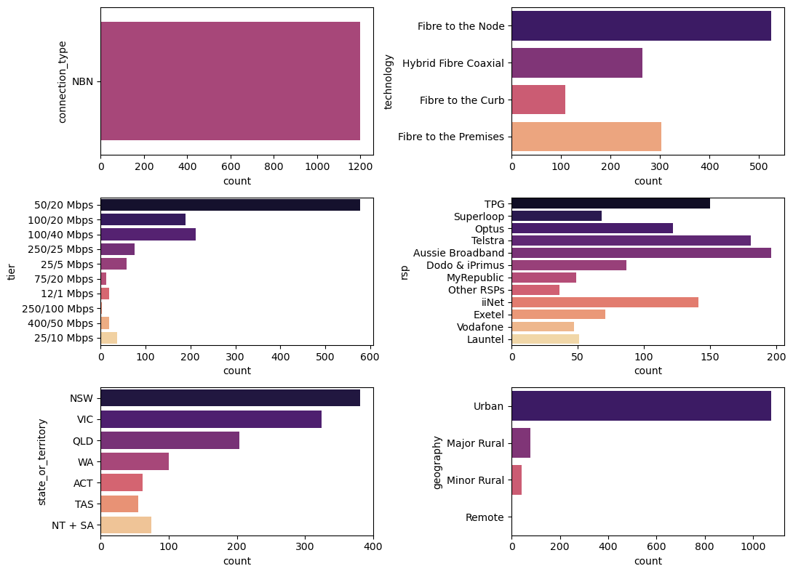

Data Analysis Summary Findings
Analysis of retail service providers versus other categorical variables such as technology, tier, and state.
RSP vs. Technology
- Aussie Broadband, Telstra and iNet are the major providers of Fiber to the Node connection.
- Hybrid Fibre Coaxial and Fiber to the Premises are second preferred connection which number varies depending on the service provider. iNet tops the chart in providing Fiber to the premises while TPG tops in Hybrid Fiber Coaxial.
RSP vs. Tier
- Telstra is our top provider of 50/20 Mbps connection which also offers 100/20 Mbps as it ranks second behind Dodo & iPrimus.
- Launtel offers 250/100 Mbps and tops the other providers in servicing 400/50 Mbps even though it does not have a lot of subscribers in other tiers.
RSP vs. State
- TPG, Optus and Telstra are the top three RSP in New South Wales (NSW) while Aussie Broadband tops in providing internet connection in Victoria State.
